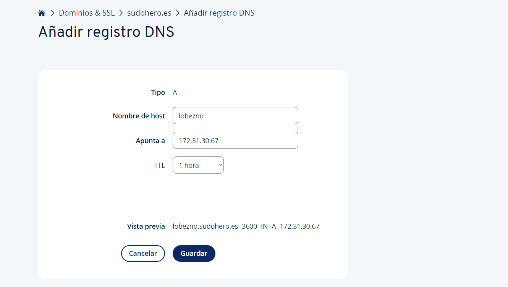
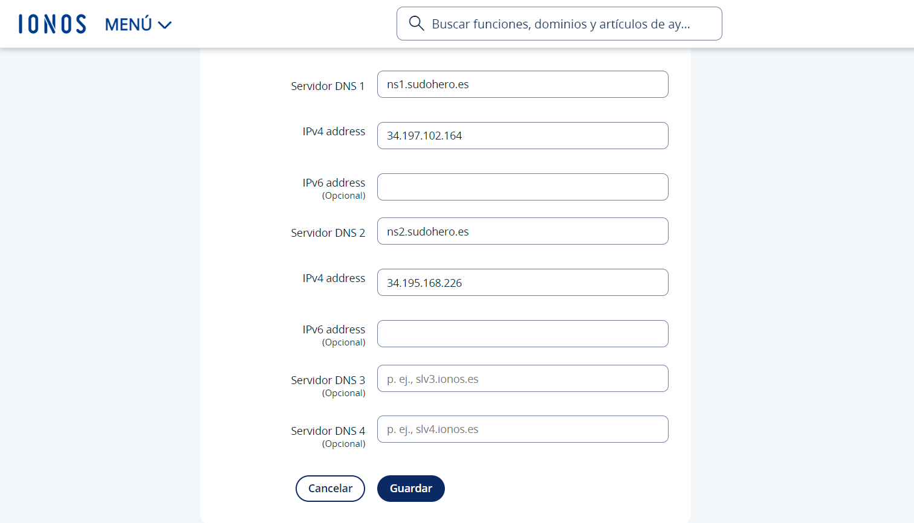

Asignación de IPs elásticas y configuración de DNS en IONOS
Lo primero que haremos será asignar direcciones IP elásticas a nuestras instancias en AWS.
Accedemos a la consola de AWS y seleccionamos la opción de direcciones IP elásticas. Luego, asignamos una dirección IP a cada una de nuestras instancias.


Una vez asignadas las IPs, nos conectamos a cada una de ellas por SSH y realizamos pruebas de conectividad mediante ping.

A continuación, configuramos las entradas DNS en nuestro dominio gestionado en IONOS. Añadimos dos registros tipo A, asignando cada IP elástica a un subdominio correspondiente.


Finalmente, verificamos que las entradas han sido creadas correctamente.

Implementación de un servidor DNS con BIND
En esta documentación se detallará el proceso de instalación y configuración de un servidor DNS primario en Fedora y un servidor secundario en Ubuntu, utilizando BIND.
Para comenzar, instalamos el paquete BIND en la instancia Fedora con el siguiente comando:
dnf install bind

Editamos el archivo de configuración principal de BIND en /etc/named.conf para definir las opciones básicas del servicio.

Definimos la zona del dominio sudohero.es, especificando que se trata de una zona maestra.

Configuramos el archivo de zona en /var/named/named.sudohero.es, definiendo los registros DNS.
Aseguramos los permisos correctos para el archivo de zona y reiniciamos el servicio BIND. Realizamos una consulta con nslookup para comprobar la resolución de nombres.
chmod 640 /var/named/named.sudohero.es
systemctl restart named

Añadimos al fichero de zona el registro de la zona secundaria que crearemos a continuación en la instancia Ubuntu.
En la instancia Ubuntu, instalamos BIND9 con:
apt install bind9

Definimos la zona esclava en el archivo /etc/bind/named.conf.local.
Verificamos la transferencia de zona en los logs del sistema.
Comprobamos en la instancia Ubuntu que la zona se ha transferido correctamente.

Verificamos la configuración de los servidores DNS con consultas nslookup.
Finalmente, configuramos en IONOS el dominio para que utilice nuestros servidores DNS propios.

Comprobamos que el servidor DNS funciona correctamente y se ha expandido por la red, asegurando que la resolución de nombres está operativa y accesible globalmente, permitiendo que cualquier cliente en internet pueda resolver los dominios configurados.
Con esto, hemos finalizado la implementación del servidor DNS con BIND.
Configuración de Registros DNS para Acceso por SSH
En esta documentación se describe el proceso de configuración de registros DNS para facilitar el acceso por SSH a las instancias de la infraestructura.
1. Edición de la Zona DNS
Accedemos a la instancia del servidor DNS principal.
Editamos el archivo de zona con el siguiente comando:
nano /var/named/named.sudohero.es
Añadimos los registros A correspondientes a cada instancia:
tormenta IN A 10.0.1.229
lobezno IN A 34.195.168.226
phoenix IN A 34.197.102.164
2. Reinicio del Servidor DNS
Guardamos los cambios y salimos del editor.
Reiniciamos el servicio DNS para aplicar los cambios:
systemctl restart named
3. Verificación de la Configuración
Comprobamos que los registros se han propagado correctamente:
nslookup tormenta.sudohero.es
nslookup lobezno.sudohero.es
nslookup phoenix.sudohero.es
Probamos la conexión SSH utilizando los nombres de dominio en lugar de direcciones IP:
ssh -A fedora@phoenix.sudohero.es
ssh -A ubuntu@lobezno.sudohero.es
Nota: La instancia tormenta.sudohero.es se encuentra en la subred privada, por lo que solo se podrá acceder a ella desde lobezno.sudohero.es o phoenix.sudohero.es mediante SSH.
ssh fedora@tormenta.sudohero.es
Esta configuración permite un acceso más cómodo y organizado a las instancias a través de nombres de dominio en lugar de direcciones IP.